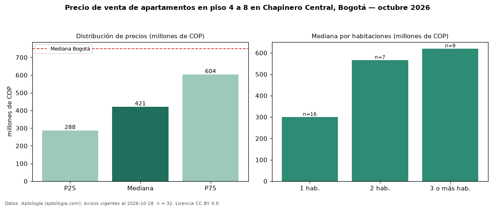

Precio de venta de apartamentos en piso 4 a 8 en Chapinero Central, Bogotá — octubre 2026
Con 32 avisos vigentes, el precio mediano de apartamentos en piso 4 a 8 en venta en Chapinero Central (localidad de Chapinero), Bogotá es COP 421 millones. Frente a la mediana de todos los apartamentos en venta de Chapinero Central (COP 365 millones, n = 104), queda 15 % por encima; este segmento reúne el 31 % de esos avisos. Por metro cuadrado, la mediana es COP 8,11 millones/m² (n = 32), 1 % por debajo del conjunto de referencia (COP 8,22 millones/m²). El área mediana anunciada es 52 m². El segmento con más oferta es el de 1 habitación (16 avisos, mediana COP 300 millones); pasar de 1 habitación a 3 o más habitaciones cambia la mediana +107 %. La administración mediana declarada es COP 386.000 al mes (n = 29). La mitad central de los avisos va de COP 288 millones a COP 604 millones (razón 2,1), una dispersión alta. El estrato más frecuente es 3 (56 % de los avisos con estrato). Datos: Aptología (aptologia.com), CC BY 4.0 — https://www.aptologia.com/venta/bogota/chapinero-central. Archivos: PDF, CSV con las cifras y gráfica PNG.

| Avisos únicos | 32 |
|---|---|
| Percentil 25 | COP 287.500.000 |
| Mediana | COP 421.000.000 |
| Percentil 75 | COP 604.000.000 |
| Mediana por m² | COP 8.114.224 |
Fuente: avisos vigentes de portales inmobiliarios recopilados por Aptología, deduplicados (mínimo 30 avisos únicos por celda). Precios pedidos, no cerrados. Fecha: 2026-10-18.